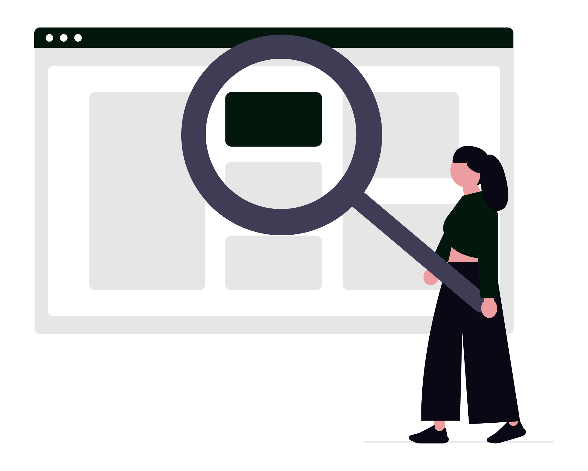

Legalit.ro este o platformă care reunește într-un singur cont informații fiscale, legislative, despre firme și despre piețele financiare. Pentru un avocat, valoarea ei nu este doar accesul la mai multe instrumente, ci reducerea timpului pierdut între Monitorul Oficial, ANAF, EUR-Lex, SEAP și diverse baze de date publice. În acest ghid vei vedea cum configurezi platforma pentru activitatea juridică și cum o folosești în verificarea clienților, documentarea dosarelor și urmărirea schimbărilor legislative.

1. Alege profilul Avocat și configurează dashboard-ul
La înregistrare, alege profilul Avocat. Îl poți schimba ulterior, iar această opțiune este importantă deoarece dashboard-ul nu trebuie să arate la fel pentru un avocat, un contabil sau un investitor. Un cabinet care lucrează cu societăți comerciale are nevoie de altă combinație de informații decât un avocat axat pe litigii sau pe consultanță fiscală.
Pentru profilul Avocat, configurează ca elemente principale:
- Highlights legislative, pentru actele normative pe care vrei să le urmărești;
- EUR-Lex, dacă ai clienți cu activitate transfrontalieră sau dosare în care contează dreptul european;
- Căutare firmă ANAF, pentru o verificare rapidă a unei societăți;
- Gazete și alerte legislative, pentru Monitorul Oficial și notificări.
Elimină widget-urile pe care nu le folosești zilnic și adaugă-le înapoi doar când ai un proiect relevant. Un dashboard bun este un panou de decizie, nu o listă exhaustivă a tuturor funcțiilor platformei.
2. Monitorizează legislația română și europeană
Monitorul legislativ urmărește zilnic Monitorul Oficial și oferă rezumate pentru edițiile publicate. În loc să verifici manual fiecare gazetă, poți căuta și filtra conținutul după cuvinte-cheie, acte normative și tag-uri.
Funcția este utilă când vrei să identifici rapid modificări în materia fiscală, comercială, a muncii sau a achizițiilor publice.
Configurează alerte pentru termeni care apar frecvent în dosarele tale: Cod fiscal, achiziții publice, societăți, insolvență, digitalizare, GDPR sau numele unui act normativ. Legalit.ro poate trimite alerte zilnice la ora 09:00 și permite configurarea lor după cuvinte-cheie. Folosește highlight-uri pe actele importante și consultă istoricul ultimelor alerte când trebuie să explici clientului când ai identificat o schimbare.
Pentru drept european, folosește secțiunea EUR-Lex din dashboard. Este un punct de pornire practic pentru a observa regulamente, directive și alte acte relevante pentru clienții care operează în mai multe state membre. Pentru analiza finală, verifică întotdeauna textul oficial, versiunea aplicabilă și data intrării în vigoare.
Poți completa această rutină cu monitorizarea legislativă în practica avocaturii și cu o procedură internă prin care fiecare alertă importantă este transformată într-o notă de lucru sau într-o sarcină pentru dosarul relevant.
3. Verifică firmele și partenerii înainte de a lua o decizie
Înainte de a redacta un contract, de a accepta un mandat sau de a recomanda o acțiune împotriva unei societăți, caută firma după CUI. Legalit.ro afișează date generale despre companie, informații ANAF în timp real, stare fiscală, statut TVA, datorii și situație financiară, în funcție de datele disponibile în sursele integrate.
Un flux simplu de verificare poate arăta astfel:
- Introdu CUI-ul în Căutare firmă și verifică identitatea societății.
- Compară denumirea, adresa și starea fiscală cu documentele primite de la client.
- Verifică statutul TVA și existența datoriilor relevante pentru analiza comercială.
- Salvează datele firmei și descarcă informațiile ca dovadă sau document de lucru.
- Notează data verificării în dosar, deoarece datele fiscale se pot modifica.
Dacă lucrezi permanent cu aceiași clienți sau furnizori, activează monitorizarea firmelor. Planul Pro permite monitorizarea nelimitată a firmelor. înainte de abonare, verifică dacă volumul cabinetului justifică acest nivel de utilizare.
4. Folosește verificarea TVA în due diligence
Verificarea TVA este relevantă în contracte comerciale, litigii între profesioniști și analize privind tranzacții intracomunitare. Platforma oferă verificare TVA România, verificare europeană în sistemul relevant și posibilitatea de a verifica mai multe firme în bulk.
Pentru o analiză documentată, nu te limita la rezultatul „valid” sau „invalid”. Salvează extrasul TVA criptat, mai ales când documentul este destinat utilizării în relația cu ANAF, și păstrează data la care a fost generat. Monitorizarea statutului TVA al partenerilor este utilă atunci când un contract se execută pe o perioadă lungă și regimul fiscal al celeilalte părți poate influența facturarea.
Dacă trimiți clientului un rezultat, explică ce dovedește verificarea și ce nu dovedește. Un statut TVA valid nu înlocuiește verificarea capacității de plată, a reprezentării sau a celorlalte condiții contractuale.
5. Urmărește termenele fiscale ale clienților
Calendarul fiscal centralizează termenele de declarare și plată și te ajută să urmărești ce declarații trebuie depuse. Pentru un avocat care oferă consultanță antreprenorilor sau lucrează împreună cu un contabil, calendarul poate deveni un punct de control înaintea fiecărei discuții cu clientul.
Configurează profilul astfel încât reminder-ele să reflecte tipul de contribuabil urmărit. Folosește reminder-e pe mai multe niveluri: unul cu suficient timp pentru colectarea documentelor, unul înainte de redactare și unul în apropierea termenului de depunere. Activează notificările pe email pentru termenele pe care nu vrei să le ratezi.
Nu trata calendarul ca pe o dovadă că o obligație a fost îndeplinită. El îți arată termenul și te ajută să organizezi munca.
confirmarea depunerii și documentele justificative trebuie păstrate în sistemul de dosare al cabinetului.
6. Folosește calculatoarele fiscale în discuțiile cu antreprenorii
Legalit.ro include calculatoare fiscale cu cote actualizate pentru 2026, calcul automat și simulări pe baza datelor introduse. Printre instrumente se numără calculatorul de salariu net, comparatorul PFA vs SRL, calculatoarele pentru microîntreprindere, dividende, taxe PFA, CAS, CASS, impozit pe venit, TVA și dobânzi ANAF.
Într-o consultație, poți compara scenarii în loc să prezinți o singură concluzie:
| Situație analizată | Instrument util | Întrebarea clientului |
|---|---|---|
| Alegerea formei de organizare | PFA vs SRL | Ce variantă se potrivește activității și veniturilor estimate? |
| Retragerea profitului | Calculator dividende | Care este suma netă după taxele aplicabile? |
| Angajarea unei persoane | Calculator salariu net | Care este costul total și suma încasată? |
| Depășirea unui prag fiscal | Calculatoare CAS/CASS/TVA | Ce obligații suplimentare pot apărea? |
Introdu datele reale ale clientului, notează ipotezele și exportă sau salvează rezultatul dacă platforma permite. Calculele sunt instrumente de lucru, nu o opinie fiscală universală: verifică perioada, deducerile, sporurile, plafonările și situația concretă înainte de a formula recomandarea finală.
7. Accesează rapid SEAP pentru achiziții publice
Dacă reprezinți operatori economici sau autorități contractante, secțiunea SEAP / achiziții publice oferă acces rapid la căutarea și consultarea licitațiilor publice. Poți folosi informațiile pentru o primă documentare a procedurii, a autorității contractante sau a furnizorilor implicați.
Un flux practic este să cauți după obiectul contractului, să verifici termenul și documentele disponibile, apoi să salvezi referința în dosarul electronic. Pentru analiza juridică propriu-zisă, consultă documentația oficială a procedurii și respectă termenele și regulile aplicabile. Legalit.ro scurtează etapa de orientare. nu înlocuiește lectura integrală a caietului de sarcini, a clarificărilor și a comunicărilor oficiale.
8. Creează o rutină pentru cercetare și documentare
În loc să folosești platforma ocazional, creează o rutină de 15 minute la începutul zilei:
- verifică Gazetele Monitorul Oficial recente și alertele de la ora 09:00;
- deschide highlight-urile actelor care privesc domeniile cabinetului;
- verifică firmele monitorizate pentru schimbări fiscale importante;
- revizuiește calendarul și reminder-ele pentru următoarele zile;
- salvează în dosarele interne doar informația relevantă, împreună cu data și sursa.
Pentru fiecare client important, poți avea o fișă de verificare cu CUI, statut TVA, termene urmărite, cuvinte-cheie legislative și linkuri către actele relevante. Astfel, platforma devine parte dintr-un proces repetabil, nu doar un motor de căutare.
9. Folosește ghidurile fiscale ca punct de orientare
Biblioteca de ghiduri fiscale include materiale actualizate pentru 2026, inclusiv despre Declarația Unică, PFA vs SRL și impozitul pe microîntreprindere. Secțiunea FAQ reunește sute de întrebări și răspunsuri fiscale, utile pentru pregătirea unei întâlniri sau pentru formularea întrebărilor corecte către contabilul clientului.
Înainte de consultație, caută tema în ghid și notează termenii pe care trebuie să îi verifici în legislația aplicabilă. Nu copia automat un răspuns într-o opinie juridică: verifică data actualizării, excepțiile și dacă situația clientului corespunde ipotezelor din material.
Ghidul este un instrument de orientare și economisește timp în faza de cercetare inițială.
10. Păstrează rapoarte și dovezi ale verificărilor
Pentru verificări despre firme, TVA sau alerte legislative, păstrează un traseu clar al documentării. Salvează informațiile despre companie, descarcă datele ca dovadă și folosește extrasul TVA criptat atunci când este necesar în relația cu ANAF. Dacă ai nevoie de un raport PDF despre o firmă, ține cont că această funcție și trimiterea raportului prin email sunt indicate ca fiind în dezvoltare.
O convenție utilă de denumire poate fi:
2026-08-10_CUI-1234567_verificare-fiscala_client.pdf
2026-08-10_CUI-1234567_extras-TVA_criptat.pdf
2026-08-10_alerta_monitor-oficial_contracte.pdf
Păstrează separat documentul original, nota de analiză și concluzia transmisă clientului. În felul acesta poți reconstitui ce informații erau disponibile la momentul recomandării.
11. Configurează securitatea și limitele de acces
Datele despre clienți, firme și situații fiscale pot fi confidențiale. Folosește un cont individual, o parolă unică și autentificarea disponibilă în platformă.
Nu trimite credențialele colegilor și nu încărca în câmpuri publice date care nu sunt necesare pentru verificare.
Înainte de a salva sau descărca informații, stabilește:
- cine din cabinet are nevoie de acces;
- cât timp trebuie păstrat documentul;
- unde este stocat documentul și cine îl poate distribui;
- cum marchezi datele obținute din surse publice față de notele interne;
- când trebuie șters sau arhivat materialul.
Legalit.ro integrează surse precum ANAF, Monitorul Oficial, Ministerul Finanțelor, EUR-Lex, BNR și SEAP, dar responsabilitatea pentru utilizarea datelor în dosar rămâne la cabinet. Verifică întotdeauna sursa și nu confunda accesul rapid la informație cu o garanție asupra interpretării juridice.
12. Explorează funcțiile de investiții doar dacă sunt relevante
Profilul Investitor / Pro include simulator de portofoliu, backtesting, analiză fundamentală, indicatori precum P/E și EV/EBITDA, analiză DCF, comparator de companii, monitorizare de portofolii și cotații în timp real. Există și simulări pentru acțiuni, depozite și investiții imobiliare, precum și curs BNR în timp real.
Aceste instrumente pot fi utile când analizezi structura unei companii, pregătești o discuție despre o investiție sau verifici informații financiare de bază. Separă însă analiza de piață de opinia juridică și fiscală. Un model DCF sau un backtest este o simulare bazată pe ipoteze, nu o promisiune privind rezultatul viitor.
Concluzie
Folosirea eficientă a Legalit.ro ca avocat începe cu un dashboard simplu și continuă cu rutine clare: monitor legislativ, verificări CUI și TVA, calendar fiscal, cercetare SEAP și salvarea dovezilor. Platforma îți poate reduce timpul de căutare și îți oferă într-un singur loc acces la surse precum ANAF, Monitorul Oficial, EUR-Lex, BNR și SEAP, dar nu înlocuiește verificarea textului oficial, raționamentul juridic sau consultanța fiscală specializată.
Principalul compromis este că nivelul de acces și unele funcții, precum monitorizarea nelimitată a firmelor sau instrumentele de investiții, depind de profil și plan, iar anumite rapoarte PDF sunt încă în dezvoltare. Dacă dorești să implementezi Legalit.ro pentru cabinetul tău cu un dashboard adaptat specificului, proceduri de monitorizare și integrare cu fluxurile tale de lucru, echipa SOLON oferă consultanță de digitalizare adaptată specificului practicii tale juridice.